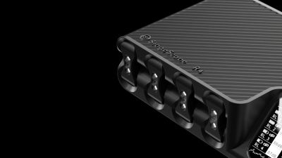
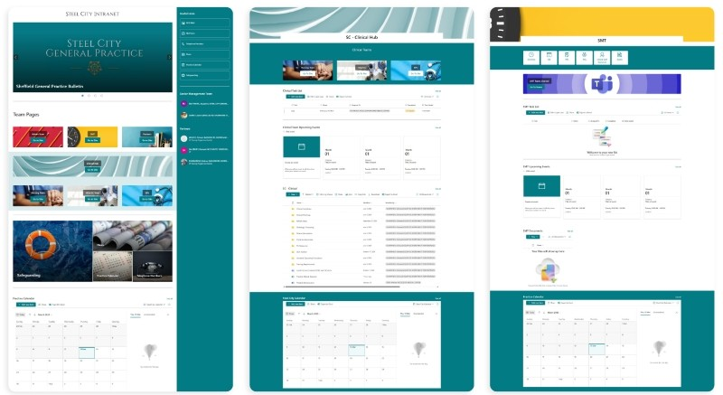

Hi, I'm Andrew (click for more)
I am a Designer with experience in industrial and UX design combining creative problem-solving with technical precision. With experience in product development, rapid prototyping, user interface design, and web development, I've had significant roles in projects ranging from multi-million-pound engineering solutions to NHS clinical system interfaces. Passionate about designing functional, aesthetically refined, and user-focused products, I thrive on turning complex challenges into innovative, viable solutions. Applying this to both physical and digital design.
NHS clinical system interfaces.
Passionate about designing functional, aesthetically refined, and user-focused products, I thrive on turning complex challenges into
innovative, viable solutions. Applying this to both physical and digital design.

Nisl adipiscing
Nunc blandit nisi ligula magna sodales lectus elementum non. Integer id venenatis velit.

Tempus aliquam veroeros
Nunc blandit nisi ligula magna sodales lectus elementum non. Integer id venenatis velit.

Aliquam ipsum sed dolore
Nunc blandit nisi ligula magna sodales lectus elementum non. Integer id venenatis velit.

Cursis aliquam nisl
Nunc blandit nisi ligula magna sodales lectus elementum non. Integer id venenatis velit.

Sed consequat phasellus
Nunc blandit nisi ligula magna sodales lectus elementum non. Integer id venenatis velit.

Mauris id tellus arcu
Nunc blandit nisi ligula magna sodales lectus elementum non. Integer id venenatis velit.

Nunc vehicula id nulla
Nunc blandit nisi ligula magna sodales lectus elementum non. Integer id venenatis velit.

Neque et faucibus viverra
Nunc blandit nisi ligula magna sodales lectus elementum non. Integer id venenatis velit.

Mattis ante fermentum
Nunc blandit nisi ligula magna sodales lectus elementum non. Integer id venenatis velit.

Sed ac elementum arcu
Nunc blandit nisi ligula magna sodales lectus elementum non. Integer id venenatis velit.

Vehicula id nulla dignissim
Nunc blandit nisi ligula magna sodales lectus elementum non. Integer id venenatis velit.


{kind=link}
{kind=link}
{kind=link}